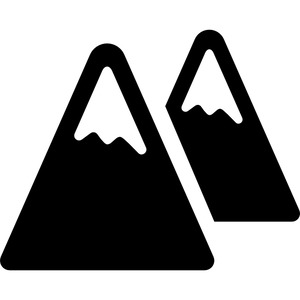

ⲕⲟⲟϩ SA, ⲕⲱϩ S, ⲕⲟϩ A (Pro 1 21) B, ⲕⲁϩ Sf (Mor 17), ⲭⲟϩ B nn m f (rare, v d), a angle, corner: Ex 26 24 S, 4 Kg 14 13 S, Job 1 19 S, Ps 117 22 S, Ap 7 1 S (all B ⲗⲁⲕϩ) γωνία, Job 38 6 S (B do) γωνιαῖος, Is 28 16 S ⲕ. ⲛⲃⲟⲗ B (var ϫⲱϫ ⲛⲗ.), 1 Pet 2 6 S (B do) ἀκρογωνιαῖος; ShA 2 149 S ϩⲉⲛⲕ. ⲛϩⲉⲛⲏⲓ ⲏ ϩⲉⲛϫⲟ, ShIF 152 S scratching sores ϩⲣⲁⲓ ϩⲛϩⲉⲛⲕ. ⲛϫⲟ, BMis 208 S cross on pillars ⲙⲛⲛⲕ. ⲛⲛⲏⲓ, Ryl 165 S on east of ⲡⲕ. ⲙⲡⲉⲛⲏⲓ, P 12918 115 S laid selves below shady ⲕ. ⲙⲡⲉⲧⲣⲁ, BIF 13 112 S ⲡⲕ. ⲙⲡⲉϥⲡⲟⲣⲕ = MG 25 303 B ⲗⲁⲕϩ.ϥⲧⲟⲟⲩ ⲛⲕ., four-cornered: Ge 6 14 S (B = Gk) τετράγωνος; J 21 39 S house ⲡⲣⲟⲥ ⲡⲉϥ. ⲛⲕ. ⲉⲧⲕⲱⲧⲉ ⲉⲣⲟϥ;b point, top: Ge 28 18 S (B ⲗ.), Pro 1 21 SA (B do) ἄκρον; adj: Deu 8 15 B (S ⲡⲉⲧⲣⲁ ⲉⲥⲛⲁϣⲧ), Job 40 15 S (B ϭⲓⲥⲓ) ἀκρότομος; Deu 34 1 S (B ⲁⲫⲉ), Mic 4 1 SA (B ϭ.) κορυφή; Jud 9 36 S κεφαλή; Ez 41 22 S (B ⲗ.) κέρας; Jos 18 19 S λοφιά, Lu 4 29 S (B ϭ.) ὀφρύς; Mor 17 43 Sf ⲡⲕⲁϩ prow of ship ἐξοχή; Mor 40 44 S = MG 25 270 B there was ⲟⲩⲕ. ⲛⲧⲟⲟⲩ in road, BMar 210 S = Rec 6 174 B I mounted upon ⲟⲩⲕ. ⲛⲧⲟⲟⲩ.c fragment, piece: BMis 193 S 2 small ⲕ. ⲛϣⲉ for making cross, Aegyptus 3 280 S ⲁⲓⲧⲁϩⲟ ⲟⲩⲕ. (ⲙ)ⲙⲁ & built thereon house, Ryl 357 S 2 ⲕ. ⲙⲙⲁ, BKU 1 135 S ⲕ. ⲛⲉⲓⲱϩⲉ, Miss 4 749 S ⲕⲟⲩⲓ ⲛⲕ. ⲛⲟⲉⲓⲕ, BMOr 9525(1) S ⲕ. ⲛⲭⲁⲣⲧⲓⲛ, BM 1135 S ⲕ. ⲛⲟⲃⲛ, Bodl(P) a 2 25 half a ⲛⲁⲗⲣⲱϩⲁⲙ (الرخام), PRain 4725 S I send ⲕⲟⲩⲓ ⲛⲕ. ϩⲛⲑⲟⲓⲧⲉ of Apa Severus, PBu 96 S ⲛⲉⲓⲕ. ⲛϣⲁϫⲉ.d rarely f: Ps 113 8 B ἡ ἀκρότομος (sc πέτρα), BM 479 S ⲃⲧⲟ ⲛⲕ. ⲉⲥⲟⲓ (l ⲛⲥⲟⲓ), PBu 94 S ⲧϣⲟⲣⲡ ⲛⲕ. ⲛⲥⲭⲓⲧⲁⲣⲓⲛ (σχεδάριον), Mor 56 60 S mount of ⲧⲕ. = P ar 4888 153 جبل ادكوهي.As name: Κόοϩ (Preisigke); place-name: CO 57 ⲡⲕⲱϩ (v Ep 1 118).
(noun masculine/feminine)
shapes
angle, corner [γωνια]
point, top [ακρον]
fragment, piece
point, top [ακρον]
fragment, piece


1: angle, 2: corner, 3: point, 4: top, 5: fragment, 6: piece
complete
| ϥⲧⲟⲟⲩ ⲛⲕ. | four-cornered [τετραγωνος]626 | 132a | |||||||
131b
ⲕⲁϩ Sf v ⲕⲟⲟϩ.
132a
517b
ⲭⲟϩ B nn v ⲕⲟⲟϩ.
See also:
| view | ⲁⲗⲟⲕ B | (noun masculine) corner, angle [αγκαλη]426 |
| view | ⲗⲁⲕϩ SB ⲗⲉⲕϩ SfF | (noun masculine) (f once)
corner, extremity, top [ακρος, αγκωνισκος, γωνια, κρασπεδον] piece, fragment [κλασμα, ξωμος] builder's square962 |
| view | ⲑⲟⲩⲥ B | (noun masculine) point of beard2787 |
| view | ⲗⲁⲕⲙ, ⲗⲁⲕⲙⲉ S ⲗⲉⲕⲙⲏ Sf ⲗⲉⲕⲙⲉ AL ⲗⲁⲕⲙⲏ, ⲗⲁⲭⲙⲏ B ⲗⲉⲕⲙⲓ, ⲗⲉⲭⲙⲓ F | (noun feminine) once m, piece, fragment [κλασμα, ξωμος]951 |
| view | ⲗⲉⲯⲉ, ⲗⲉⲡⲥⲉ, ⲗⲓⲯⲉ S ⲗⲁⲡⲥⲓ B | (noun masculine) fragment, small portion997 |
| view | ϫⲟⲩⲗ B | (noun masculine) fragment or sim2392 |